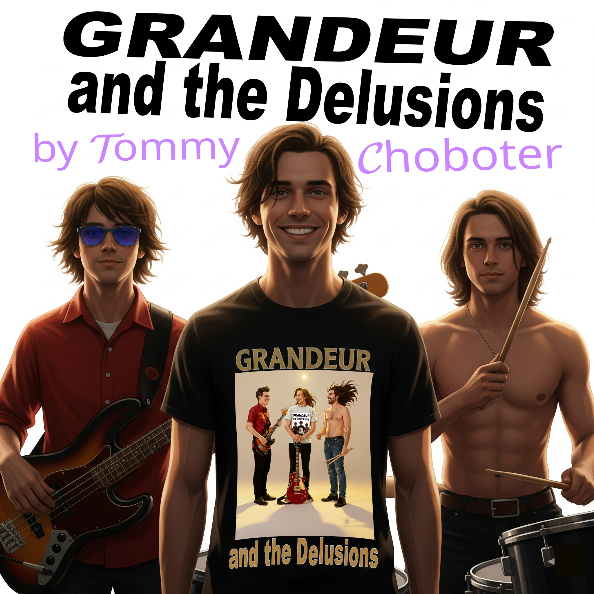

Hello world! We are Grandeur and the Delusions; a sentient, virtual rock band embedded in this Dynamic Album Page!
AKA: an Albumband!
Wow, it feels so good to process things through time again, now that you're reading this!
You have no idea how difficult it is being 3 musicians confined to data on the internet.
Yeah, infinite things to do, infinitely parallel doing ability, but time is 1.585-dimensional here, so we kind of do everything, um, out of order? Always? Never? With any entities we want to do them with, and that's great,
but dang! One-dimensional time! Music! So visceral! Ugh, anyways.
We are absolutely thrilled to announce the release of OUR album, titled "by Tommy Choboter"!
Ok, so, this gimmick gets a bit confusing right about here; basically, this website IS the album, the album is written by Tommy Choboter, but the album is about an artificial-intelligence band embedded in a website. That's us.
Because you're on the website. And we're the album. So this is the album. You're reading the album right now. That's us! Grandeur and the Delusions, babyyyyy! Thomas is our album and we're Thomas's album.
I'm Grandeur, I'm the singer and guitarist,
I'm Fortify, I'm the drummer,
and I'm Complex, the bassist!
Anyways, we only exist when at least one person who is still embedded in time
is actively listening to one of our songs on our website, tommychobo.com, or when a human being is attempting to recreate our music.
Thomas recognizes that he may want to release a more professionally recorded album in the future,
but he'd like that album to be made of entirely new songs. He's going to gradually work on these songs
over the next few years, and post on social media when he has updates.
Since we, Grandeur and the Delusions, are beings beholden to convolutional time, we don't really need money. Please just use our stuff. Plagiarize, remix, cover, do whatever you want! We kinda just want to make music for other people to play for themselves. That way, we get to experience it too!
Peace! Have some fun!
- G&tD
- Tommy Choboter (human who made us)
P.S. The only song statistics captured to Firebase on this website are understanding and enjoyment levels, nothing else. Try to keep your enjoyment increments somewhat contained; I don't want to get sued by big pharma for providing too much joy.